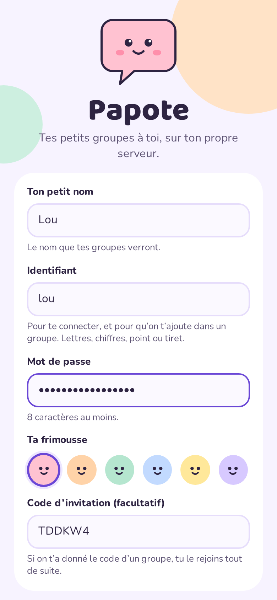
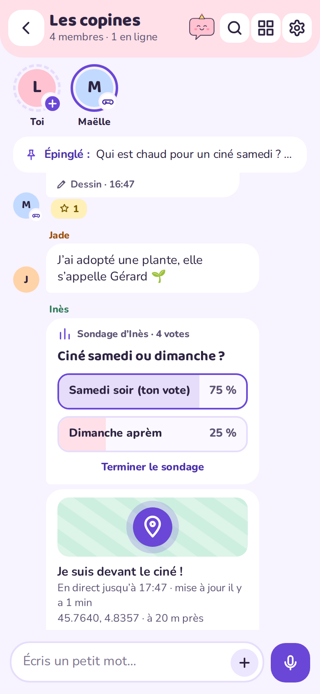
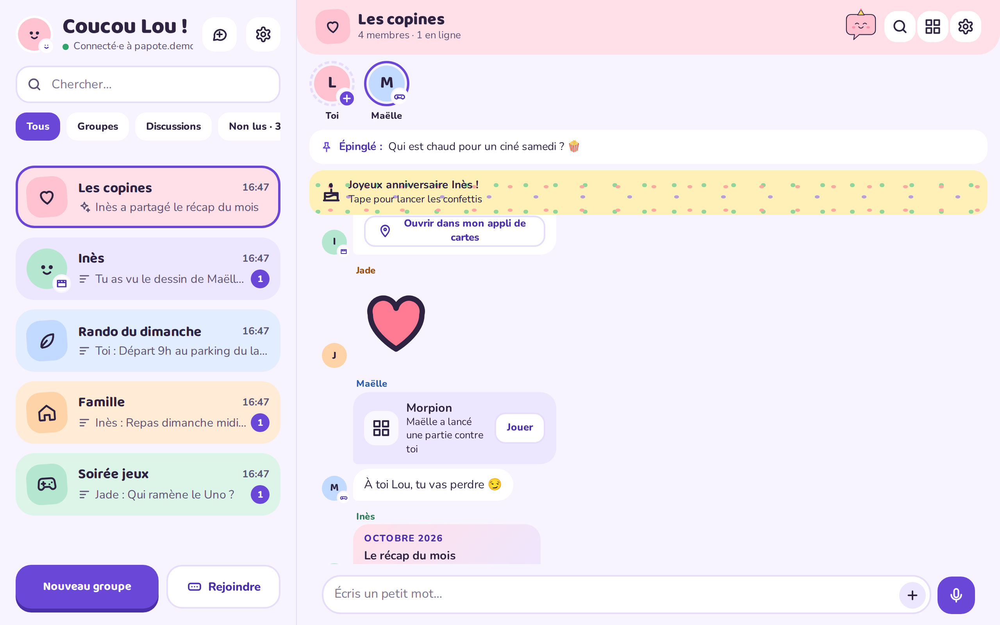
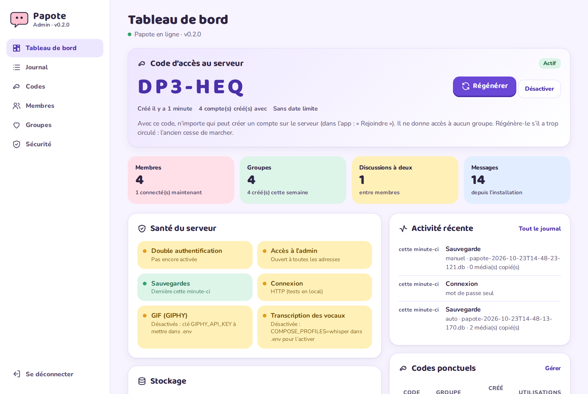

Des discussions vivantes
Texte, photos, vidéos et fichiers, vocaux avec forme d’onde, emoji, réactions, répondre en glissant, coches de lecture, messages épinglés, stories de 24 h, et Bubu, la mascotte qui réagit à ton groupe.
Papote est une messagerie ludique pour la famille, les copines, les colocs. Une app Android, une app web installable pour iPhone et ordinateur, et un seul conteneur Docker chez toi. Messages, photos, vocaux et dessins n’en sortent jamais.
Construite à partir d’une maquette Claude Design complète : chaque écran est dans les apps.
Texte, photos, vidéos et fichiers, vocaux avec forme d’onde, emoji, réactions, répondre en glissant, coches de lecture, messages épinglés, stories de 24 h, et Bubu, la mascotte qui réagit à ton groupe.
Un vrai outil de dessin, une toile commune où tout le monde dessine en même temps, des timelapses, « dessiner dessus » et des stickers faits de dessins.
Morpion, Puissance 4, Chifoumi, Pendu, « Qui a dit ça ? » avec vos vieux messages, et un Pictionary en direct.
Sondages, partage de position sans service de carte, confettis d’anniversaire, galerie « il y a un an jour pour jour » et récap du mois avec médailles.
Vitesse de lecture, filtres de voix rigolos, mode talkie, et transcription en option par un conteneur Whisper sur ta machine.
Un identifiant et un mot de passe, les mêmes sur tous tes appareils. On ajoute un contact dans un groupe en un geste, ou n’importe qui par son identifiant ; codes d’invitation et QR codes aussi. Partage depuis les autres applis, en français ou en anglais.
Sept thèmes (Pastel, Nuit étoilée, Carnet, Néo-pop, Sobre, Arcade, Forêt) avec leurs polices et leurs formes, les couleurs de ton choix, en clair ou en sombre, et un fond pour chaque groupe : motifs ou photo.
Android garde sa propre connexion (pas de Firebase) et affiche les conversations comme les autres messageries : pop-up en haut de l’écran et bulles pour répondre partout. Les navigateurs et la PWA iPhone reçoivent du Web Push chiffré.
Admin avec 2FA, liste d’adresses autorisées, journal, sauvegardes automatiques et restauration en un clic, corbeille de 30 jours, inscriptions ouvertes ou sur invitation avec liens et QR codes, mots de passe provisoires, vérification des nouvelles versions — sans accès au contenu des groupes.
De vraies captures de l’app web avec des copines imaginaires. L’app Android a le même look.




Il suffit d’une machine avec Docker. Un reverse proxy en HTTPS est conseillé (nécessaire pour installer l’app web et recevoir les notifications).
docker-compose.ymlservices:
papote:
image: ghcr.io/mrddream/papote:latest
container_name: papote
restart: unless-stopped
ports:
- "${BIND_ADDRESS:-127.0.0.1}:${PORT:-3000}:3000"
env_file: .env # tous les réglages viennent de .env
environment:
PORT: 3000 # dans le conteneur
BACKUP_DIR: /backups
PAPOTE_PROFILES: ${COMPOSE_PROFILES:-}
volumes:
- ./data:/data
- ${BACKUP_HOST_DIR:-./backups}:/backups
# En option : transcription des vocaux (COMPOSE_PROFILES=whisper)
whisper:
image: onerahmet/openai-whisper-asr-webservice:v1.9.1
container_name: papote-whisper
profiles: ["whisper"]
restart: unless-stopped
environment:
ASR_MODEL: ${WHISPER_MODEL:-small}
ASR_ENGINE: faster_whisper
volumes:
- ./whisper-cache:/root/.cache.env à côtéADMIN_PASSWORD=un-long-mot-de-passe-a-toi
PORT=3000 # 3080… si 3000 est pris
BIND_ADDRESS=127.0.0.1 # 0.0.0.0 si le proxy est ailleurs
TRUST_PROXY=loopback, uniquelocal
SECURE_COOKIES=true
TZ=Europe/Paris
GIPHY_API_KEY= # en option : les GIF
COMPOSE_PROFILES=whisper # en option : la transcription
MAX_UPLOAD_MB=20
UPDATE_CHECK=trueChaque variable est expliquée dans le README. COMPOSE_PROFILES vide = pas de Whisper.
docker compose up -dOuvre http://ton-serveur:3000/web/ ou l’app Android, entre l’adresse du serveur, puis un pseudo, un identifiant et un mot de passe. Les inscriptions sont ouvertes par défaut ; dans /admin, tu peux les passer sur invitation et partager des liens ou des QR codes d’inscription.
Télécharge l’APK de la dernière version et installe-le. Android 8 ou plus. Aucun service Google nécessaire. Les nouvelles versions s’installent par-dessus, et l’app te prévient quand il y en a une.
Ouvre https://ton-serveur/web/ dans Safari, Chrome, Firefox ou Edge. Ajoute-la à l’écran d’accueil pour l’installer et recevoir les notifications.
GIF via GIPHY (relayés par ton serveur) et transcription des vocaux avec Whisper : une ligne chacun dans .env (GIPHY_API_KEY, COMPOSE_PROFILES=whisper).
Les navigateurs exigent le HTTPS pour installer l’app web et afficher les notifications. Mets Caddy ou nginx devant Papote : il doit garder l’en-tête Host, laisser passer le WebSocket sur /ws, accepter des envois un peu plus gros que MAX_UPLOAD_MB et se connecter depuis une adresse listée dans TRUST_PROXY.
Le certificat, le WebSocket et les en-têtes sont gérés tout seuls. /etc/caddy/Caddyfile, puis sudo systemctl reload caddy :
papote.example.com {
# Facultatif : l’admin seulement depuis le réseau local
@admin_outside {
path /admin /admin/*
not remote_ip 192.168.0.0/16 10.0.0.0/8
}
respond @admin_outside 404
reverse_proxy 127.0.0.1:3000
}Caddy dans Docker à côté de Papote, dans le même fichier compose : reverse_proxy papote:3000.
/etc/nginx/sites-available/papote, avec un certificat obtenu par certbot (sudo certbot certonly --nginx -d papote.example.com) :
# WebSocket (/ws) : on ne passe en WebSocket que si le navigateur le demande
map $http_upgrade $connection_upgrade {
default upgrade;
'' close;
}
server {
listen 80;
listen [::]:80;
server_name papote.example.com;
return 301 https://$host$request_uri;
}
server {
listen 443 ssl;
listen [::]:443 ssl;
http2 on; # nginx < 1.25.1 : « listen 443 ssl http2; » à la place
server_name papote.example.com;
ssl_certificate /etc/letsencrypt/live/papote.example.com/fullchain.pem;
ssl_certificate_key /etc/letsencrypt/live/papote.example.com/privkey.pem;
client_max_body_size 25m; # un peu plus que MAX_UPLOAD_MB (20)
proxy_http_version 1.1;
proxy_set_header Upgrade $http_upgrade;
proxy_set_header Connection $connection_upgrade;
proxy_set_header Host $host; # liens d’inscription, QR codes, contrôle du WebSocket
proxy_set_header X-Forwarded-For $remote_addr;
proxy_set_header X-Forwarded-Proto $scheme;
proxy_read_timeout 1h; # le WebSocket reste ouvert
# Facultatif : l’admin seulement depuis le réseau local
location /admin {
allow 192.168.0.0/16;
allow 10.0.0.0/8;
deny all;
proxy_pass http://127.0.0.1:3000;
}
location / {
proxy_pass http://127.0.0.1:3000;
}
}Puis fais un lien dans sites-enabled et lance sudo nginx -t && sudo systemctl reload nginx.
Pour vérifier : dans /admin, le lien d’inscription doit commencer par https://papote.example.com/. S’il affiche http:// ou 127.0.0.1, le proxy ne transmet pas Host ou X-Forwarded-Proto, ou son adresse n’est pas dans TRUST_PROXY. Nginx Proxy Manager, Docker et le reste dans le README.
Un fichier SQLite et un dossier de médias sur ton disque. Sauvegarde, restaure, emporte-les ailleurs.
Pas de statistiques, pas de pub, pas de script tiers. GIPHY ne voit jamais tes membres, les cartes ne s’ouvrent que si tu touches le bouton.
La page admin montre des compteurs et des noms, jamais les messages, photos ou dessins.